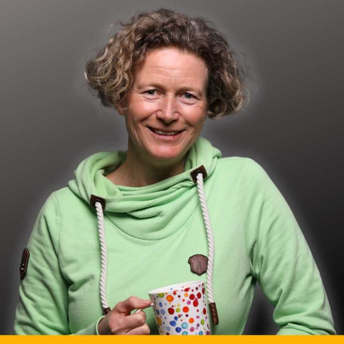
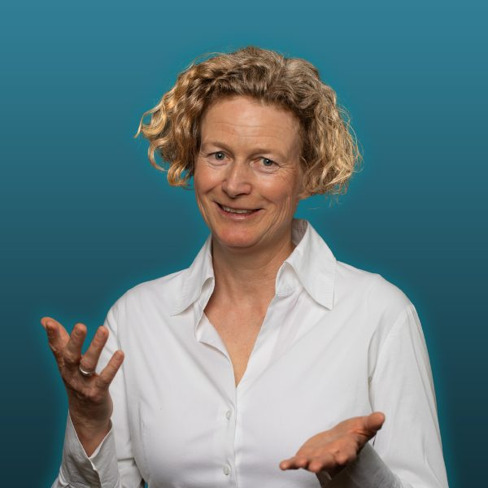

Varianten zum Durchblättern, Vergleichen und Lernen. Zu jedem Block findest du die Fachbegriffe der Effekte, ein Feld für deine Änderungswünsche und zwei Kopier-Buttons.
Diese Datei ist ein Gerüst in Marits Design. Die Grundwerte stehen ganz oben im Bereich DESIGN-TOKENS. Das reicht aber nicht für ein stimmiges Ergebnis: Dein Designsystem enthält viel mehr Regeln, zum Beispiel welche Farbe auf welchem Hintergrund stehen darf, wie Schatten und Linien aussehen und welche Bilder aus welchem Ordner kommen. Deshalb bekommt deine KI nicht nur neue Farben, sondern den Auftrag, dein ganzes Designsystem zu lesen und anzuwenden.
Leg die Datei in deinen Arbeitsordner, ersetze im Prompt den Pfad und gib ihn deiner KI:
Jeder Block trägt dafür zwei kleine Angaben: den Stil (ruhig oder kräftig) und die Bewegung (keine, dezent, auffällig). Daran erkennt die KI, welche Blöcke gut zusammenpassen.
Die Anmeldeblöcke haben action="#" und zeigen nur eine Demo-Bestätigung. Für den echten Einsatz die Formular-Adresse deines Newsletter-Tools eintragen lassen und die Feldnamen daran anpassen.
Ein kurzer Einleitungssatz, der den Nutzen zusammenfasst. Platzhalter, ein bis zwei Zeilen.
Platzhaltertext für das erste Feature. Zwei bis drei Sätze, die den konkreten Nutzen beschreiben.
Platzhaltertext für das zweite Feature. Zwei bis drei Sätze, die den konkreten Nutzen beschreiben.
Platzhaltertext für das dritte Feature. Zwei bis drei Sätze, die den konkreten Nutzen beschreiben.
Ein kurzer Einleitungstext, der erklärt, wie die drei Schritte aufeinander aufbauen. Platzhalter.
Platzhaltertext für die erste Station. Zwei Sätze zum Nutzen.
Platzhaltertext für die zweite Station. Zwei Sätze zum Nutzen.
Platzhaltertext für die dritte Station. Zwei Sätze zum Nutzen.
Platzhaltertext für das erste Feature. Zwei bis drei Sätze zum konkreten Nutzen.
Platzhaltertext für das zweite Feature. Zwei bis drei Sätze zum konkreten Nutzen.
Platzhaltertext für das dritte Feature. Zwei bis drei Sätze zum konkreten Nutzen.
Platzhaltertext für das erste Feature. Hier ist Platz für drei bis vier Sätze, weil jede Zeile viel Raum bekommt. Die Farbfläche lässt sich später durch ein Foto oder einen Screenshot ersetzen.
Platzhaltertext für das zweite Feature. Hier ist Platz für drei bis vier Sätze, weil jede Zeile viel Raum bekommt.
Platzhaltertext für das dritte Feature. Hier ist Platz für drei bis vier Sätze, weil jede Zeile viel Raum bekommt.
Ein kurzer Satz, der die drei Bausteine einordnet. Platzhalter.
Das Hauptfeature bekommt die große Kachel. Platzhaltertext mit zwei bis drei Sätzen zum wichtigsten Nutzen deines Angebots.
Platzhaltertext für das zweite Feature, kurz gehalten.
Platzhaltertext für das dritte Feature, kurz gehalten.
Ausführlicher Platzhaltertext für das erste Feature. Hier ist Platz für drei bis vier Sätze oder später ein Screenshot.
Ausführlicher Platzhaltertext für das zweite Feature. Hier ist Platz für drei bis vier Sätze oder später ein Screenshot.
Ausführlicher Platzhaltertext für das dritte Feature. Hier ist Platz für drei bis vier Sätze oder später ein Screenshot.
Ein kurzer Satz, was die Person bekommt und warum es sich lohnt. Platzhalter.
Kein Spam. Abmeldung jederzeit mit einem Klick. Hinweise zum Datenschutz findest du hier.
Ein bis zwei Sätze darüber, was im Freebie steckt und welches Ergebnis am Ende steht. Platzhalter.
Kein Spam. Abmeldung jederzeit möglich.
Ein Satz Nutzen, kurz und klar. Platzhalter.
Ein bis zwei Sätze Nutzen. Platzhalter für den Text, der Lust auf das Freebie macht.
Kein Spam. Abmeldung jederzeit möglich.
Ein bis zwei Sätze, die neugierig machen. Der Klick auf den Button ist schon ein kleines Ja und senkt die Hürde für das Formular.
Kostenlos · dauert 20 Sekundenoder 3 Raten à 170 €
Dazu etwa 2 Stunden pro Woche für die Umsetzung. Platzhaltertext für eine ehrliche Einordnung.
Jetzt Platz sichernAlle Preise inkl. MwSt.
Hier steht ein persönlicher Absatz, der noch einmal einordnet, für wen das Angebot gedacht ist und warum der Preis so ist, wie er ist. Platzhaltertext, zwei bis drei Sätze.
Deine Investition: 490 € einmalig oder 3 Raten à 170 €.
Ein weiterer kurzer Satz zur Zeit, die du einplanen solltest, oder zu einer Garantie.
Ein bis zwei Sätze, was du bekommst. Platzhaltertext.
einmalig oder 3 Raten à 170 €, inkl. MwSt.
Jetzt anmeldenWenn du merkst, dass es nicht passt, bekommst du dein Geld zurück. Platzhalter für deine Garantiebedingungen.
Platzhalter für ein echtes Zitat. Zwei bis drei Sätze, am besten mit einem konkreten Ergebnis statt allgemeinem Lob.
Platzhalter für ein echtes Zitat. Was war vorher schwierig, was ist jetzt anders? So wird eine Stimme glaubwürdig.
Platzhalter für ein echtes Zitat. Gern auch etwas Persönliches über die Atmosphäre in der Gruppe.
Platzhalter für dein stärkstes Zitat. Ein Satz, der das Ergebnis deines Angebots auf den Punkt bringt, in den Worten einer echten Teilnehmerin.
Kurzes Platzhalter-Zitat, ein bis zwei Sätze.
Vorname N.Kurzes Platzhalter-Zitat mit einem konkreten Ergebnis.
Vorname N.Kurzes Platzhalter-Zitat über die Begleitung.
Vorname N.Kurzes Platzhalter-Zitat über die Gruppe.
Vorname N.Kurzes Platzhalter-Zitat, ein bis zwei Sätze.
Vorname N.Kurzes Platzhalter-Zitat über den Aha-Moment.
Vorname N.Kurzes Platzhalter-Zitat über die Zeitersparnis.
Vorname N.Kurzes Platzhalter-Zitat, ein bis zwei Sätze.
Vorname N.Platzhalter für Stimme eins. Ein konkreter Satz über das Ergebnis.
Platzhalter für Stimme zwei. Was war der größte Aha-Moment?
Platzhalter für Stimme drei. Wie hat sich der Arbeitsalltag verändert?
Ein kurzer Satz zur Einordnung. Platzhalter. Hier nur echte Rückmeldungen verwenden, mit Einverständnis der Person.
Platzhalter für zwei bis drei Sätze über dich: was du machst, für wen, und warum dir das Thema am Herzen liegt.
Ein Kernsatz, der deine Haltung zeigt. Platzhalter.
Noch ein kurzer persönlicher Absatz, gern mit einem Detail, das dich nahbar macht.

Platzhalter für zwei bis drei Sätze über dich und deinen Weg. Kurz, warm, auf Augenhöhe.
Ein kurzer Einleitungssatz. Platzhalter.
Platzhalter: womit alles angefangen hat.
Platzhalter: ein Wendepunkt oder eine wichtige Erfahrung.
Platzhalter: was du daraus gemacht hast.
Platzhalter: was du heute anbietest und für wen.
Liebe Leserin, lieber Leser,
Platzhalter für einen persönlichen Brief. Warum machst du, was du machst? Was hat dich selbst einmal an diesem Punkt gehalten, an dem deine Leserin gerade steht?
Ein zweiter Absatz mit deiner Haltung und dem, was du dir für die Menschen wünschst, die mit dir arbeiten. Kurze Sätze, warm und direkt.
Ich freue mich auf dich.

Platzhalter für zwei bis drei Sätze über dich und deine Arbeit. Was macht deine Begleitung besonders?
Mehr über michAlles, was du vor der Anmeldung wissen solltest.
Platzhalter-Antwort. Zwei bis drei Sätze, ehrlich und konkret.
Platzhalter-Antwort. Zum Beispiel: Alle Calls werden aufgezeichnet.
Platzhalter-Antwort.
Platzhalter-Antwort.
Platzhalter-Antwort.
Platzhalter-Antwort, zwei bis drei Sätze.
Platzhalter-Antwort, zwei bis drei Sätze.
Platzhalter-Antwort, zwei bis drei Sätze.
Platzhalter-Antwort, zwei bis drei Sätze.
Platzhalter-Antwort.
Platzhalter-Antwort.
Platzhalter-Antwort.
Platzhalter-Antwort.
Platzhalter-Antwort.
Platzhalter-Antwort.
Keine passende Frage gefunden. Schreib mir gern direkt.
Ein letzter Satz, der das Ergebnis noch einmal auf den Punkt bringt. Platzhalter.
Ja, ich melde mich an Start am Platzhalter-Datum · begrenzte PlätzeEin bis zwei Sätze, die noch einmal einladen. Platzhalter.
Jetzt anmeldenIch freue mich auf dich.
Marit